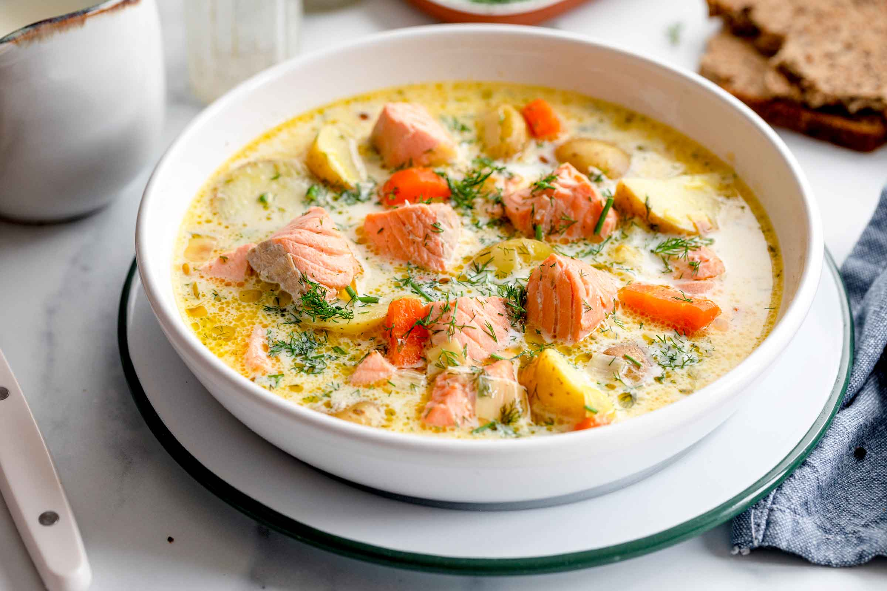

Lohikeitto
Lohikeitto, a beloved Finnish dish, embodies the essence of Nordic comfort food with its rich and creamy salmon soup.
The recipe typically starts with chunks of fresh salmon simmered gently in a broth alongside tender potatoes, leeks, and carrots, creating a harmonious blend of flavors and textures.
Fragrant dill adds a distinctive herbal note to the soup, while a generous splash of cream or milk lends a velvety richness that coats the palate with each spoonful.
This hearty concoction is a staple on Finnish dinner tables, especially during the chilly winter months, offering warmth and nourishment to those seeking solace from the cold.
Served piping hot and garnished with a sprinkle of fresh dill, Lohikeitto is often accompanied by slices of hearty rye bread or crispbread, providing the perfect complement to its savory goodness.
Whether enjoyed as a comforting family meal or shared among friends during festive gatherings, Lohikeitto captures the essence of Finnish hospitality, inviting all who partake to experience the warmth and camaraderie of Nordic cuisine.